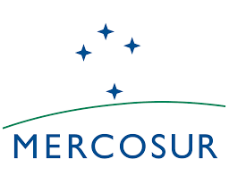
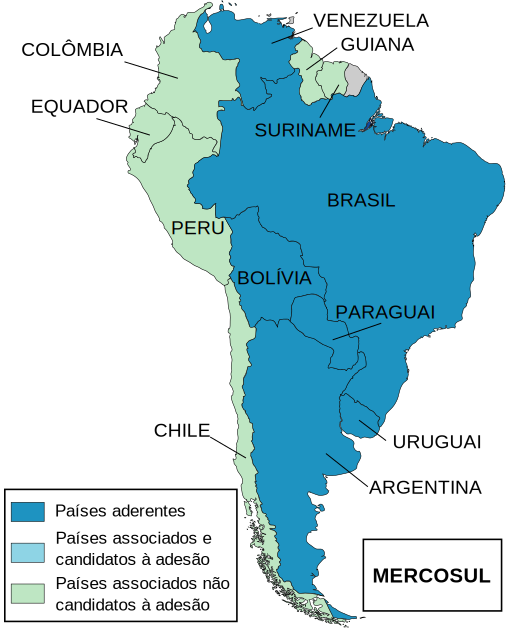
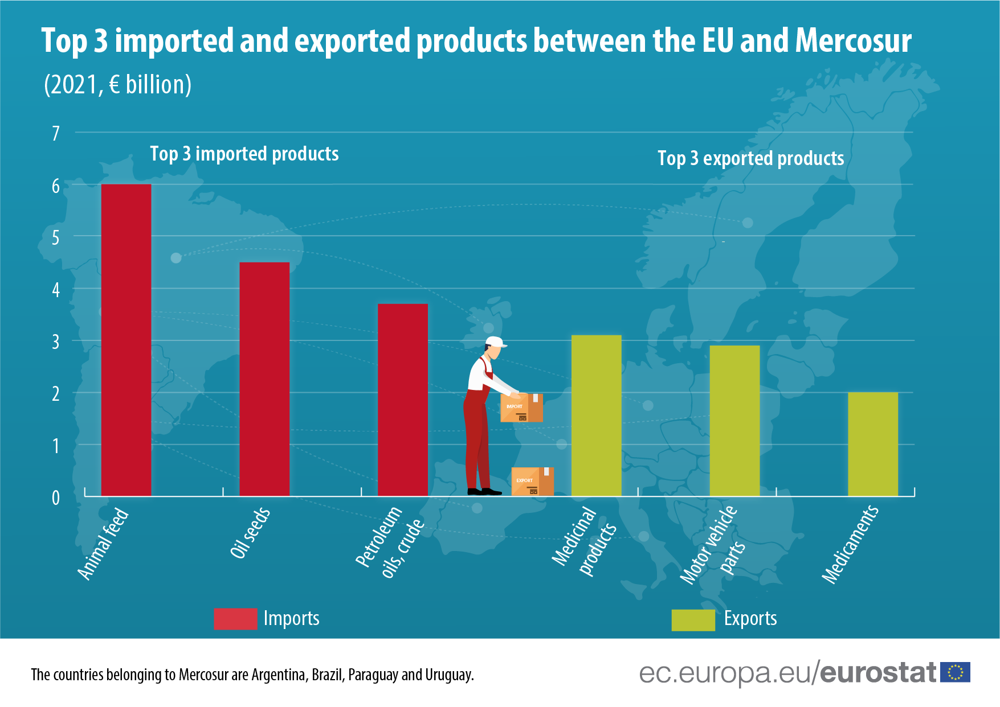
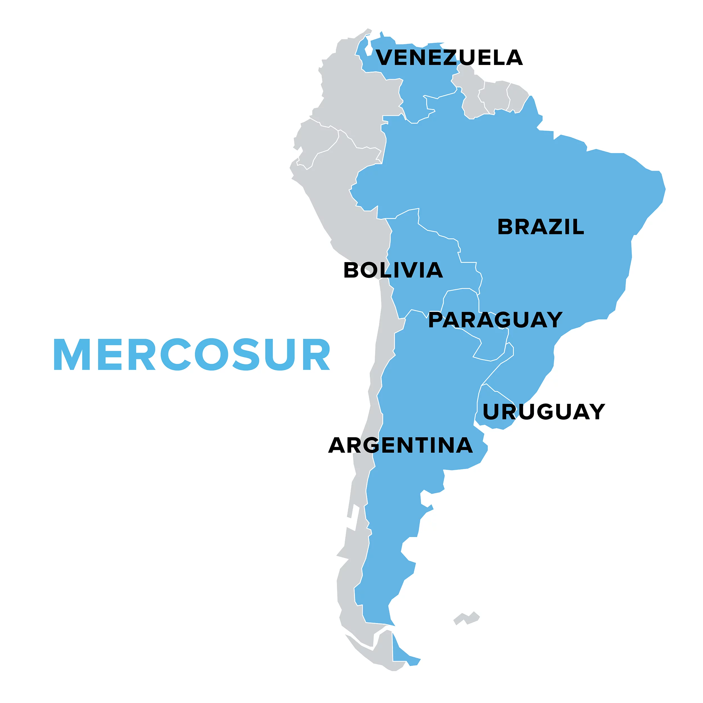
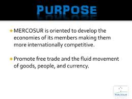
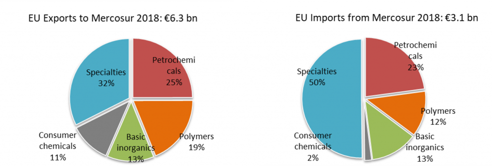

What is MERCOSUR?
MERCOSUR, the Southern Common Market, is a regional trade bloc in South America aimed at fostering economic cooperation and trade among its members. It was established to create a common market and enhance the economic and political relations of its member countries (World Bank, 2023).


Members of MERCOSUR
- Argentina
- Bolivia
- Brazil
- Paraguay
- Uruguay
- Venezuela (Suspended since 2016)

Purpose & Goals
- To encourage free trade and economic cooperation among member countries (OECD, 2022).
- To improve political relations and foster peace in the region (MERCOSUR Official Website, 2023).
- To integrate the cultures and societies of South America through collaboration (UNCTAD, 2022).

Benefits for Members
- Reduced trade barriers, such as lower tariffs, making it easier to trade goods (WTO, 2023).
- Boosted economic growth through expanded markets and foreign investment (OECD, 2022).
- Increased political collaboration, ensuring a more stable and cooperative environment (IMF, 2023).

Barriers to Trade
- Some goods still face high tariffs, limiting trade efficiency (WTO, 2023).
- Varying regulations across countries create delays and bureaucracy in trade (World Bank, 2023).

Challenges Faced
- Economic inequality among member countries, with some benefiting more than others (OECD, 2022).
- Political instability, which may disrupt trade agreements and policies (IMF, 2023).